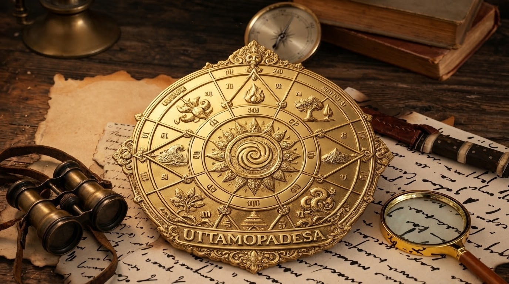

PEDOMAN DASAR KAWRUH UTTAMOPADESA

Perumus: Dhimas Purnomo, SH
Pendahuluan
Kawruh Uttamopadesa merupakan kawruh yang dirumuskan oleh Dhimas Purnomo, SH sebagai penjabaran Kawruh Sejati dalam pemahaman dan laku kehidupan manusia. Kawruh ini menempatkan pemahaman mengenai hakikat kehidupan sebagai landasan untuk membentuk budi pekerti dan menjalani kehidupan secara bertanggung jawab.
Kawruh Uttamopadesa tidak berhenti pada pemikiran dan pengetahuan. Pemahaman perlu diwujudkan dalam laku nyata melalui pemurnian cipta, ketulusan rasa, dan keutamaan karsa.
1. Landasan Kawruh Uttamopadesa
Kawruh Uttamopadesa berlandaskan pemahaman mengenai hakikat kehidupan dan hubungan manusia dengan Sang Sumber Panguripan. Landasan ini mengarahkan manusia untuk tidak hanya memperhatikan kenyataan lahiriah, tetapi juga memahami makna kehidupan dan tanggung jawabnya dalam menjalani kehidupan.
Kawruh Sejati menjadi pepadhang atau penerang dalam memahami hakikat. Kawruh Kasunyatan merupakan pemahaman manusia mengenai kenyataan kehidupan. Kawruh Uttamopadesa menjabarkan pemahaman tersebut sebagai pedoman untuk menjalani kehidupan.
2. Cipta, Rasa, dan Karsa
Cipta, rasa, dan karsa merupakan unsur penting dalam kehidupan batin manusia. Ketiganya berkaitan dengan cara manusia memahami, merasakan, menentukan kehendak, dan mewujudkan tindakannya.
Dalam Kawruh Uttamopadesa, arah pengolahannya dirumuskan melalui tiga landasan:
- Weninging Cipta: kejernihan cipta dalam memahami dan mempertimbangkan sesuatu.
- Tulusing Rasa: ketulusan rasa dalam menyikapi diri sendiri dan sesama.
- Utamaning Karsa: keutamaan kehendak yang diwujudkan dalam laku yang baik dan bertanggung jawab.
Ketiganya tidak dimaksudkan sebagai pengetahuan yang hanya dipahami secara teori, melainkan sebagai pedoman dalam menjalani kehidupan.
3. Pemahaman dan Laku
Pemahaman yang mendalam perlu diwujudkan dalam perilaku. Seseorang tidak cukup hanya mengetahui suatu kebenaran apabila pengetahuan tersebut tidak memengaruhi cara berpikir, sikap, dan tindakannya.
Karena itu, Kawruh Uttamopadesa menempatkan laku sebagai bagian penting dari penerapan kawruh. Laku merupakan perwujudan pemahaman dalam kehidupan sehari-hari, termasuk dalam cara seseorang memperlakukan sesama, mengambil keputusan, dan bertanggung jawab atas tindakannya.
4. Tujuan Kawruh Uttamopadesa
Tujuan Kawruh Uttamopadesa adalah mengarahkan manusia kepada kemurnian cipta, ketulusan rasa, dan keutamaan karsa. Arah ini bukan sekadar pencapaian pengetahuan, melainkan pembentukan kehidupan yang semakin selaras dengan pemahaman mengenai hakikat kehidupan.
Dengan demikian, Kawruh Uttamopadesa menempatkan pemahaman dan laku sebagai dua hal yang saling berkaitan. Kawruh memberikan pedoman, sedangkan laku menjadi perwujudan pemahaman dalam kehidupan nyata.
Penutup
Pedoman Dasar Kawruh Uttamopadesa memberikan landasan untuk memahami hubungan antara Kawruh Sejati, Kawruh Kasunyatan, cipta, rasa, karsa, dan laku kehidupan. Keseluruhan landasan tersebut diarahkan pada pembentukan manusia yang mampu memahami kehidupan dan mewujudkan pemahamannya melalui perilaku yang utama.